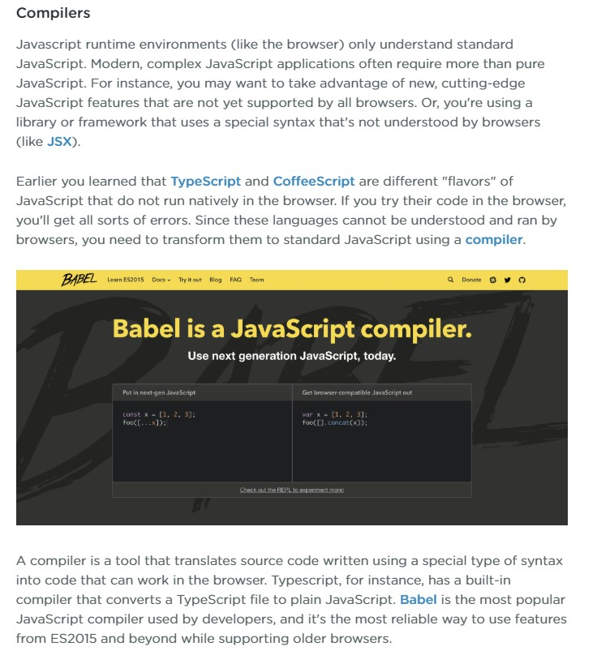
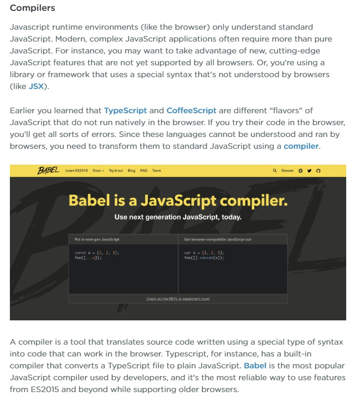
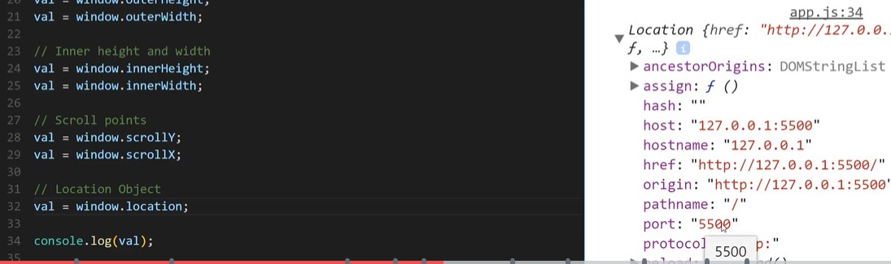

Contents
General Pointers
Important to learn the native objects for JavaScript, it will open many doors - Udemy course Modern JavaScript From The Beginning
Next progress onto learning TypeScript as this will keep your JS clean and error free, ready for Angular
You can use the JSONViewplugin in chrome to make .json webpages look better to understand
Always use DRY when coding Dont Repeat Yourself
How to document in JS JS Doc
JSDoc besides its descriptive format, the JSDoc tool itself has other useful and powerful features. JSDoc is also a documentation generator for JavaScript.
Git Hub repo for the brad traversy projects for the Udemy course
() parentheses are only used for methods and not properties
The undefined property indicates that a variable has not been assigned a value, or not declared at all.
The landscape of Javascript
JavaScript is everywhere and used in all phases of development from software to hardware.
- Javascript can run just about anywhere in both software and hardware
- Javascript started out in the browser in 1995
- Netscape was the browser that incoprated more than text and images with user interaction.
The program used in netscape for interaction in the browser was called scheme - Scheme never took of becuase the developer was actually asked to start working on Mocha which is now javascript
- It went from Mocha to LiveScript to than JavaScript.
- What is being covered in this section

notes - JavaScript's design decisions were mostly influenced by programming languages such as Self and Scheme.
The object-oriented and prototype-based programming language Self inspired JavaScript’s prototypal inheritance, and Scheme likely influenced its functional and imperative styles of programming. - Javascript started out in the browser now is included in anything that requires user interaction.
- The website lookbook.wedze.com is a good example of javascript in a website.
- Air bnb, Tesla and instagram are just some app that use javascript
- Javascript is good when running on IOT device. IOT Explained
IOT is a physical device with an onn/off switch that can connect to the internet and with other IOT devices - To run javascript outside of the browser Node.js and nodejs.org
- After the browser netscape had javascript other browsers like IE implements something like JScript
This made cross browser compatability difficult for developers - In 1996 netscape standardize things submittied to ecma international which was industry standard
- You can have different flavours of javascript
Plain Javascript
- Moving forward now a new release of ECMAScript javascript get release every year
- You also have type checkers for Javascript. Info Video

- Type script is a type of type checker built by Microsoft. Essentially a layer around JavaScript.
The browser doesnt understand type script so it needs to get compiled to javaScript code - jQuery is a JavaScript library used to add interactivity to web pages.
It's a commonly used tool found in tens of millions of sites and apps all over the web and popular front-end frameworks.
J Query explained - JavaScript is a dynamic/scripting lanuage, this runs at run time. browsers have a built in interpreter/JavaScript engine for JavaScript.

- JIT Just In Time compliers are used in browsers, coverts JS code for browsers and machines on the fly
- Text editors that are good are Sublime, Atom and Visual Studio Code
- Linters and Formatters are useful to setup in text editors - making sure indentation and syntax is correct:
Linters - ESLint.Difference between Prettier and ESLint
Code Formatters - Prettier. Difference between ESLint and Prettier - Installation(Github) and setup of the prettier ESLint in VS
- Node.js is another common JavaScript runtime environment
- Before starting your javascript project creating a build system would be good, see what is included

- Common frameworks for javascript,React , Vue and Angular
A CLI is a command line interface for these frameworks - Get Started with Debugging JavaScript in Chrome DevTools
 


JavaScript Console
Javascript has a console area that provides feedback and information on your website and related linked files
- On Google chrome you can open up the console by using the Control Shift and I key
- Used to trouble shoot and test your code
- More info on Google Console
- You can use console.log to print out variables, arrays objects and so on. A good way to check what you think something is actually is that
- You can use console.table which prints out the information in a table.

- console.error lets you log a error, displayed in red
- Console.clear() allows you to clear the console
- Console.Timer can be used to perform some actions and the time those actions took is returned

JavaScript Variables
Javascript has three types of variables Const, Let and var. See more ES6 info on this at
- The let and const variables were introduced in ES6. VAR is the oldest type of variable.
- To reassign a value in javascript you can use +=
- const variables - The value of the variable should remain constant. Once assigned a value you cant later down the code assign another value to that variable. What you can do though is a change values in a object that is assigned to a const variable. Same rule applys for arrays against a const variable. You can update the array.

- let variables lets you update/reassign the value of the variable.
- var variables - You are able to assign a value to a variable at anytime, even when a variable has been assigned a value earlier on
- For a const variable you have to assign a value
- A variable name can only include letters, numbers, _ and $
- A variable name cannot start with a number
- For multi word variables you use camel case which is the second,third and so on word starts with a captial
- Variables declared by var keyword are scoped to the immediate function body (hence the function scope) while let variables are scoped to the immediate enclosing block denoted by { } (hence the block scope). var variables are hosted and let variables are not
- Javascript has the data type string, example "Hello world!"
- If you start a string with " end with ", can also use '
How to decide on which one will determine what is in your string example if you use I'm than use " - If you use a \ infront of a ' than javascript will treat this as a normal charector
- If you want to write a string on mutiple lines use a \ at the end of each line
- Javascript has many properties that make it easier to perform simple tasks Properties
Example = passphrase.length give you the length of the variable passphrase
passphrase is a object and length is the property. - A meathod is something you can do to a string
Example = toUpperCase() - Properties are like nouns. They have a value or state. Methods are like verbs. They perform actions.
- A challange to build a word game, Your gona ask for an adjective, verb and noun and than make a story out of this.
see javascript file for the game JS_E1_260320
Block Scope
Block scopes are different from function scopes in JavaScript. A function scope is created for every function (within the function). In a browser environment, the global scope is controlled by the window object while in Node.js, it’s controlled by the global object.
- Explained in more detial Function scopes and block scopes in JavaScript
- Example of function scope vs global scope:

- A block is anything wrapped in {} like a if or a loop. In this example you will see how the var has been chnagced in Global scope. This is why we shouldnt use var for variables.

JavaScript Data Types
Javascript has two main data types, Primitive and Reference
- Primitive - Stored directly in the location the variable accesses. Stored on the stack
- Reference - Accessed by reference. Objects that are stored on the heap. A pointer to a location
- The Primitive Data types are:
- String - A squence of charectors
- Number - A number, integer, decimal and float
- Boolean - true or false
- Null - An intential empty value
- Undefined - A variable that has not been assigned a value
- Symbols ES6 - No two symbols can be the same. Example:

- The Reference Data types are:
- Arrays - A list of information. Can hold any of the above Primitive data types
- Object Literals - A comma-separated list of name-value pairs wrapped in curly braces
- Function - Hold a block of reusable code that can be called at anytime
- Dates -
- Anything Else
- JavaScript is a dynamically typed lanuage

- On the above image Javascript can ensure the strict statically typing by using TypeScript
- The typeof property can be used to show what data type is being used for a varaible
JavaScript Type Conversion
Number() converts to a Number, String() converts to a String, Boolean() converts to a Boolean.
- When a user inputs a number javascript treats this like a string, example a webform.
- You can use typeof before the variable so it displays if it is a string
- To convert a string to a number you can use parseInt
Example const fruit = parseInt(melons) + parseInt(oranges);
Melons and orange have been given numbers by the user through a propmt - To convert to a string you can also use toString()
- Number() can be used to convert JavaScript variables to numbers.
Exmaple - Number(true); // returns 1 - parseFloat is like the above but for decimal numbers
- For the above parseInt and parseFloat you can just use + before the variable and does the same thing.
- Type coercionis the automatic or implicit conversion of values from one data type to another (such as strings to numbers). Exmaple

Javascript Numbers
Numbers in JavaScript are as straightforward as they sound; you don’t need any special syntax for numbers, you write them straight into JavaScript.
- a Interger is a whole number, either positive or negative number. It has no decimal places
- Floating point numbers are used to represent fractional values and include a decimal point.
- This is an integer value -- scientific notation uses the letter 'e' to represent an exponential value.
- Arithmetic Operators - JavaScript lets you perform most mathematical calculations, including addition, subtraction, multiplication, and division.
- There are shorthand methods for performing each of the basic mathematical operations on a variable: addition, subtraction, multiplication and division. For example, to add 10 to the contents of a variable, use += 10. This both adds 10 to the current variable and assigns the result back into the variable.
There are also shorthands for subtracting from a variable, multiplying a variable by a value, and dividing a variable by a value.
Developers frequently use numbers for performing calculations; you'll likely spend a lot of time working with numbers in JavaScript. If you create a game, for example, you'll need to keep track of a player's score. If you build an eCommerce site, you'll need to figure out the total cost of items in a visitor's shopping cart. And if you want to calculate the number of days until your next birthday, you'll need to use numbers and do some math.
Time excercise js_e3_270320
Math object
- Math Object Meathods and Properties
- Javascript treats strings, numbers and booleans as objects, a object is a wrap around that data type
- Javascript objects have many properties example is object.length
- Javascript objects have many meathods example is object.toUppercase()
- Example of a math meathod Math.round(2.2) this rounds the number up
- Create a random number using Javascript Math.random() This returns a decimal place number between 0 and 1 but never 1
- To get Math.random() to return a random number between 1 and 6 you do Math.random() * 6;
- Math.floor() rounds the number down and Math.ceil() rounds the number up
Both pass the whole number if the number is not a decimal place - Example of the two above Math.floor( Math.random() * 6 ) This gives me a whole number between 0 and 5
- To have the above to give me a number between one and 6 I do Math.floor( Math.random() * 6 ) + 1;
- Example of rounding to the nearest interger for a variable. const tempRounded = Math.round(temperature);
- In the excercise above if the user did not put a number in you would get NaN, stands for not a number.
- To deal with the above issue of no input from a user use a condition if statement
Excercise JS_E4_280320
Comparison Operators
- Here are just some comparison Operators Comparison

- In Javascript when using the comparison's, Javascript reacts true and false.
- Booleans return true or false. All conditions return a true or false value. true and false are not strings no ''

- you can also use a else if in a if statement. You only use else if if the first else is false.
- add two conditions to a if statement
&& means something and something - When using the or operator || you have to have full conditions on both sides
- Document your code - Consider other developers.
To leave a comment use // or multi line comment /* */ or in line - after code //
Use comments when you are doing something complex
You can also comment out code - The equal operator in Javascript is either == or ===.
== - Checks that the value but not the data type
=== - Checks that the value and the data type. This has to be an exact match - A challange to build a quiz game, ask 5 questions and depending on the score you get a trophy
see javascript file for the game JS_E2_260320 - The signs in JavaScript < > mean less than or greater than.
String Methods & Concatenation
- You can contenate two variables using +
- By using a = against a variable you override the variable but by using a += you append to that variable.

- Example of a string with variables. In ES6 you can use Template Literals instead.

- Escaping in Javascript is when you ignore a charectors preseved action by javascript. So not treating a ' as closing a strings when used in a word.
- A string has many properties and methods in JavaScript. Example would be .length. toUpperCase() and toLowerCase() are methods that change the case of the string
- The split() method is used to split a string into an array of substrings, and returns the new array.

Template Literals
Template literals are string literals allowing embedded expressions. You can use multi-line strings and string interpolation features with them. Used as a replacement to string concatenation only found in ES6
- Template literals are enclosed by the backtick (` `) (grave accent) character instead of double or single quotes.
- Template literals can contain placeholders(variables). These are indicated by the dollar sign and curly braces (${expression}). The expressions in the placeholders and the text between the backticks (` `) get passed to a function.
- Am example shown without and with template literals

Arrays in Javascript
JavaScript arrays are used to store multiple values in a single variable
- A simple array is a variable that holds a list of data
- Both ways on how you can create a new array.

- You can check if somethng is an array by using Array.isArray(); This returns a boolean value
- Arrays are 0 based the first item is 0
- An array can hold strings, number or any sort of data types
- You can add an remove from an array as you go along.
- Example of an array var shopping = ["milk", 2, "Hello"];

- To print a array its like printing a variable becuase it is a variable
- To call a item within an array you use index. The first item in the array is 0
- Example of calling out an itme in an array

- If you call a item for example [4] and there are only three items in an array you will return undefined
- You can use properties to find details for your array. example numbers.length. Numbers being an array variable
- You can add a another value to a 6 value array. numbers[ numbers.length ] = 7;
- You can add a value to an array using a push meathod. numbers.push(8, 9);. numbers being the array and the array having 7 values inside
- You can add a value to the start of an array using a unshift meathod. numbers.unshift( 0 );.
- To print an array in javascript you can use printList( playList );. Playlist being the array variable
- To remove the first value from an array you use the command numbers.shift();
.shift also retrieves the first item in the array and you can save this in a variable - Example var lastItem = numbers.shift(); - To remove the last value from an array you use the command numbers.pop();
.pop also retrieves the last item in the array and you can save this in a variable - Example var lastItem = numbers.pop(); - Example of a array and for loop working toghther

- The join meathod is used with an array, enabling you to display all the value in one go from the array.
Exmaple is var daysString = daysInWeek.join(",");. This says use , to join all the values in the array

- To sort an array of numbers you can use .sort with a function.

- The concat meathod is used with multiple arrays, enabling you to joing different arrays toghther.
Exmaple is var allStudents = currentStudents.concat( newStudents );. This says concat the currentStudents array with the newStudents array.
The arrays still exisit as they stand but concat simply makes a new variable with them both in

- You can use the meathod indexOf for an array to tell you the position of a item in the array
Example - var position = fruit.indexOf("Apple");. The result for the variable would be 0 as Apple is first in the array

- For the indexOf meathod if you as for the position of a item that isnt in the array you get back -1
- To check for something in an array you can use if (inStock.includes(search) === true). Search is what is typed in the prompt and includes brings back boolean
- array example excercise
- A two dimensional array is an array that holds other arrays, dont forgot the , after the arrays - Example:

First array is at index 0, second index 2 and so on. Just like a normal array
To get a value from within one array it would look like grades[2][0]. This says get the first value in the third array - A two dimensional array that hold a playlist of songs with the artists

- The Array.prototype.filter() method creates a new array with all elements that pass the test implemented by the provided function.

- LOOK AT MAP FUNCTION
Objects in Javascript
In real life, a car is an object. A car has properties like weight and color, and methods like start and stop:

- Javascript is commonly known as a object oriented software, strings, booleans, functions and so on are either objects or treated as objects
- An object is something that either has a property or a meathod
- Example - an array is a object as it has properties such as .length or meathods such as .push
- A key or property is like a variable and the value for that key or property is like a value for a variable
- Example for for a object in a variable
var student = {};
- When adding values in a object you dont use a ; - Example name : "Sarah",
- You can add everything to an object, string, number, boolean, array and so on
- To access a property of a object you use a key.


- To assign a new value to a property in a object you use person.name = "Bobby";. Name is the key and person is the object

- To create a new property on an object you use person.country = "Brazil";. Person is the object and country will be the new property
- An object can be seen as a package of variables
- To reference a property that lives within the object you have to use this. see example

- a return would normally only return one value but when returning a object you can return all the values of the object
- The loop used for an object is called a for in loop. This loops through each key and property in the object
- An example of a for in loop. for and var and in cant be changed but propName is just like i in for loops

- Another for in loop example


- Remember, const does not prevent the arrays and objects assigned to variables from being modified; it only prevents the variable itself from being reassigned or overwritten completely.
For example, attempting to override person to equal another object literal throws an error. Person being the const variable - If you hve an array or object assigned to a const variable you cannot override the variable itself but you can add to the object or array
- Example of converting a two dimentional array into object making it easier to call out


Date Object
The Date object is used to work with dates and times. Date objects are created with new Date().
- There are four ways of instantiating a date:

- The date object has many methods
Conditional Statements
You can change what your program does by adding decision-making to it. Programmers make a program react to different situations using JavaScript conditional statements.
Conditional Statements - If Statement
- To apply conditions you can use a if else statement
- An example of a if statement and if else statement is as below:

- More information on condiitons in JavaScript
- It is best practice to place this type of code/syntax into a function to it can be ran multiple times if required
- Something to be careful of is when checking conditions ensure that the answers are expected as the comparision is case sensative. Also ensure that numbers as seen as number not strings.
- A video explaining if else statements Mosh if else
- Typically you open and close returns or blocks of code with { but the below also works

Ternary Operator
The conditional Ternary operator is the only JavaScript operator that takes three operands: a condition followed by a question mark (?), then an expression to execute if the condition is truthy followed by a colon (:), and finally the expression to execute if the condition is falsy.
This operator is frequently used as a shortcut for the if statement.


- The first expression determines which of the next two operators are used. This is everything before the ?
- The below example checks that anything before the ? is true and than the left of the : is run otherwise the right of the : is run

- A ternary can also be used in a variable, so the result in the calcualtion in the varaible is returned.

Conditional Statements - switch and Case
The switch statement is very similiar to a if statement. A switch statement is usually more efficient than a set of nested ifs. Deciding whether to use if-then-else statements or a switch statement is based on readability and the expression that the statement is testing.
The switch statement was introduced in ES6 and evaluates an expression, matching the expression's value to a case clause, and executes statements associated with that case, as well as statements in cases that follow the matching case.- More information on a Switch Statement
- Were in a if statment we place the argument first here we place the argument in switch statements
- Below example we are shown that the parameter is day which is defined earlier as a variable. Than the argument case and if meet the console is logged and breaks takes us out of the switch statment

- By removing the break in the switch statement if the case is meet the action will be applied and than unexpected things will occur. This is why this is sometimes seen as a bad choice
- A switch statement does not have a else statement so it uses a default statement

- A switch is good to use if there are a lot of cases/conditions instead of having many if else statements. Example below:

Exploring JavaScript Conditionals
This is not the best way to build logic but these methods will be used. Below we'll explore alternatives to if..then statements for controlling program flow. Even if you don't end up using them, you will see these forms appear in other code bases, and it's helpful to know how they work.
- A if else statement is a condiitonal statement as it acts based on the condition defined

- The path that the if else statement follows is called branches, they branch the logic in different directions based on the result
- A two way branch is a if else statement and a multi branch is a if else if statement. Below example looks for true first

Below is a example of multi way, going through all the conditions looks to see which one is the first one meet?
Javascript Functions
JavaScript functions let you create reusable chunks of code. They make programming faster, easier, and less error-prone. They are also one of the essential concepts in JavaScript programming.
- Informative video Dev Ed
- Functions are a repetable set of insturctions you can over and over again
- You setup your function and than you can call it when ever you like
- A function name cant have spaces or start with a number but you can use letters and number and dollar sign
- The () after a function are called parentheses
- Remember to close the syntax and call the function once completed, example FUNCTIONNAME();
- Math.floor() and Math.random() are also functions as they have (), these are built in functions
- Example of a function

- A function can return a value, this can be used in a alert or variable Example

- To return a value from a function use return in the function
Example return random, random being a variable. When I call this value from the function I still use () example console.log( getRandomNumber () ); - The below image is an exmaple of a function that looks in the html for a value in the Info ID

- A return in a function can only return one thing
Passing information into a function in the ()
- You can send information into a function, these are called arguments. You have to add a parameter into the function example function goToCoffeeShop(drink). Parameter being drink
- Example below - You are using the parameter drink and the alert give a message using that parameter. When calling the function you give that drink parameter a value Iced Tea.

- Another example - Upper is the parameter and this determines what the max random number can be. We pass many different numbers through the function

- You can pass more than one paramter into a function, see exmaple below

- Its not neat to pass to many arguments into a function, you can use something like an array
- Variables created in a function dont interact with any variable outside that function
- variables outside of a function are part of the global scope. Variables in the function and global scope dont interact.

- If you have paramters in a function and dont pass any in you get undefined
- You can set default values for these parameters you pass in, see below:

Function Declarations Vs. Function Expressions
An anonymous function (Function Expressions) is a function without a name after the function keyword. Dont forget to add a ; after the closing } as it is a variable example
- Below is a example of a anonymous function

- The JavaScript engine moves function declarations to the top of their scope before code execution. This behavior is called: hoisting
- Function declarations load before any other code is loaded. See example

- Function expressions dont work like function declarations. The code runs from the top down and errors if the wrong way


The right layout
- Summary for function declaration and fuction expression
Function Decalration

Function Expression

IIFEs
An IIFE is an Immediately-invoked Function Expression. You do not need to call the function after the function is created it is ran immediatley
- An example of a IIFE function is as below:

- Another exmaple with and without paramters:


Arrow Functions
Arrow functions were introduced in ES6. Arrow functions allow us to write shorter function syntax:

Javascript Loops
JavaScript supports different kinds of loops:
- for - loops through a block of code a number of times
- for/in - loops through the properties of an object
- for/of - loops through the values of an iterable object
- while - loops through a block of code while a specified condition is true
- do/while - loops through a block of code once, and then repeats the loop while a specified condition is true
Simplify Repetitive Tasks with Loops
Storing, tracking and handling data is a large part of computer programming. Arrays provide a method for storing multiple values into a single variable. That makes an array a convenient way to pass around a list of items. In this course, you'll learn how to create arrays and use loops to access their contents. You'll also learn some advanced methods that make working with arrays easier.
- Loops enable you to repeat a task, like multiple random number or mutiple questions until you get the right answer
- Arrays enable you collect a lot of information in one place, like a list of 100 random numbers
- A loop repeats a certain number of actions a certain number of times or until a certain condition is true
While Loops
A loop that runs until the condition is no longer true
- The syntax for the while loop is as below, condition and then the code block to run.

- You set the i variable outside of the loop but set the increment inside of the code block of the loop.

- An example of a while loop - Below is the example explained:
The variable counter is 0 and counts the time the while loop is ran
The condition in the while loop is keep running until you get to 100. counter less than 100
so the function is ran and everytime it runs it adds one to the variable counter counter += 1;
- Another example of a while loop with a condition using a function

- A while loop complex example


- The while loop condition has to be true for the loop to run
- Something has to happen in the loop for it to stop running, normally the loop updates a variable that breaks the condition, variable being i
Do while loop
Do while loop - This loop will always be executed at least once, even if the condition is false, because the code block is executed before the condition is tested
Good to be used to collect a users email address. The loop would run wihtout checking any conditions and than keep running until it has a valid email address

- Below is a example of a do while. It asks a users to insert a number and keep going until the user get the right random number recording the number of tried attempts

For loop
The loop will continue to run as long as the condition is true. It will only stop when the condition becomes false.
- Normally used when looking through an array.
- for loop vs while loop example

- The for loop is normally written like below, also in my previous experience you use i

- In the example below you have a variable that is updated everytime the loop is ran. the for loop is structured through:
assigning a value to i
setting a condition, i has to be less than or equal to 10
and everytime the loop is ran 1 is added to i through +=
Thank inside the {} a update is performed dynamically updating the variable outside the loop
Finally the variable outside the loop is written to the page

- Another example were you have to log every number from 4 to 156 in the console log

- Exit condition on a loop - when something is no longer true.
You can also use a break statement, example below were the while condition is always true but the break will stop the loop after the right answer

- The below example is were we want the user to guess the random number in 10 guesses also capturing if they gues sit right before

- In for loops try to use let when defining the variable i
- You can set a condition for a particular part of the loop while skipping the nomal step for that part of the loops.

- A little more information on break and continue in a for a loop:
- The break statement "jumps out" of a loop.
- The continue statement "jumps over" one iteration in the loop.
- Excercise for using loops and clenaing up code js_e5_310320.html
For Each Loop
forEach() method calls a function once for each element in an array, in order. Note: the function is not executed for array elements without values.
- The paramters used in a foreach loop is as below:

- The map is used to created a new array. The below example created a ids arrays after looping through the users object. Its a dynamic way to create a array as it will update when you update the users object.

ForIn Loop
for in loops through the properties of an object
- An example of a forin loop:

Window Object Of JavaScript
The window object represents an open window in a browser. If a document contain frames (<iframe> tags), the browser creates one window object for the HTML document, and one additional window object for each frame. Note: There is no public standard that applies to the Window object, but all major browsers support it.
- The window/browser is the global environment, this is the oppoiste to nodeJS.
- The window object has many things like fetch API and local storage, see a list HERE
- In the window object document is the core of the dom.
- The alerts and propmts arnt great so maybe use a bootstrap version
- You can get the height and width of the users browser and the were the scroll bar is. This info can be used for resizing the website and making animations happen when a user is at a particular section of the website.

- window.location can get you lot sof useful detials like host, port and so on
 - To look at the browsing history - window.history
- The navigator object focuses on the browser. Displaying things about the browser
Short circuit evaluation
Two important aspects of logical operators in JavaScript is that they evaluate from left to right, and they short-circuit.
What this means is that when JavaScript evaluates an OR expression, if the first operand is true, JavaScript with short-circuit and not even look at the second operand. In the example below the asterisks (****) indicate any value — it simply doesn’t matter what it is as JavaScript will never even read that side of the Logical OR.

- Short Circuit evaluation - Stopping code execution as soon as possible
- The below example shows that the console log will never print chicken as the false short circuits the console log. JavaScript works from the left looking for a false of a failed expression

- This example below shows the above example but better checking condition and then executing the console log. It wount run as false will short circuit this

- The below example uses the || operator which is or. This will return the true as the first condition is true

- Below a short circuit is used in a function ensuring that the parameter start is always defined. This is done through a variable saying start is the number passed in or 1

- In ES2015 you can simply assign the default value in the paramter of the function

JavaScript JSON
JSON is a format for storing and transporting data. JSON is often used when data is sent from a server to a web page.
- JSON stands for javascript object notation - used a lot with ajax to exchange data with a server and web browser

- JSON stands for JavaScript Object Notation
- JSON is a lightweight data interchange format
- JSON is language independent * - The JSON syntax is derived from JavaScript object notation syntax, but the JSON format is text only. Code for reading and generating JSON data can be written in any programming language.
- JSON is "self-describing" and easy to understand